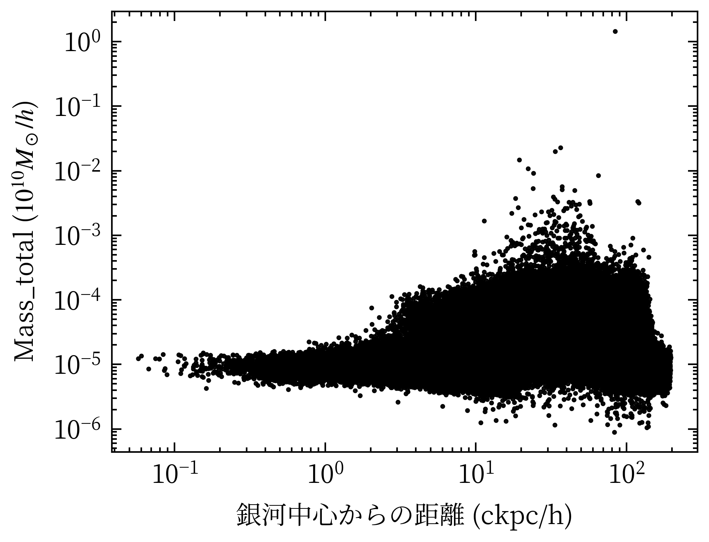
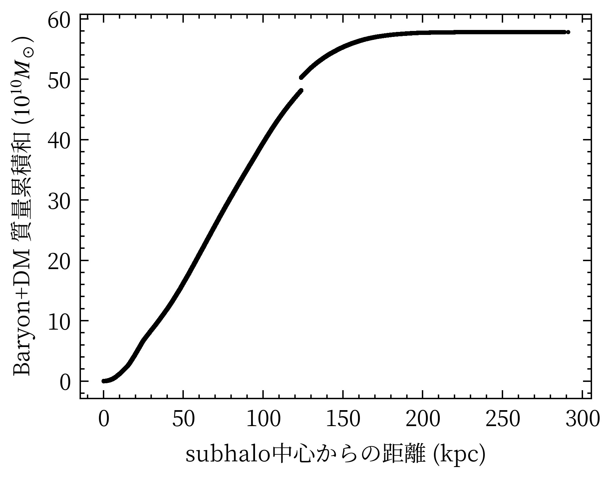
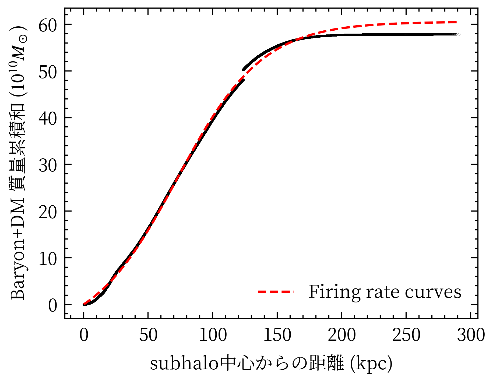
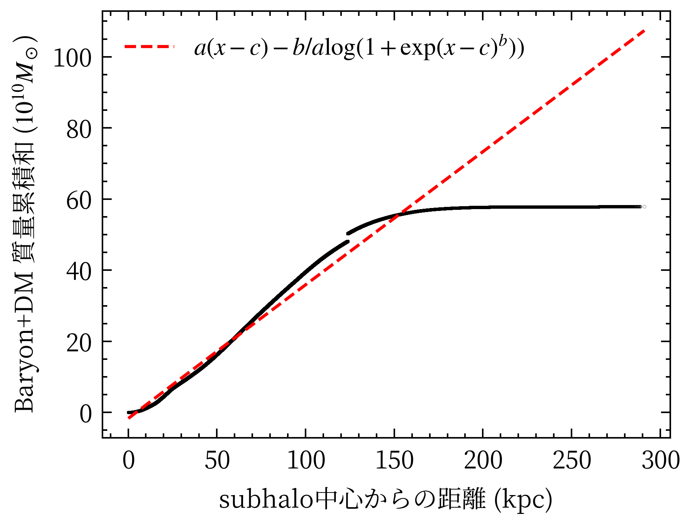
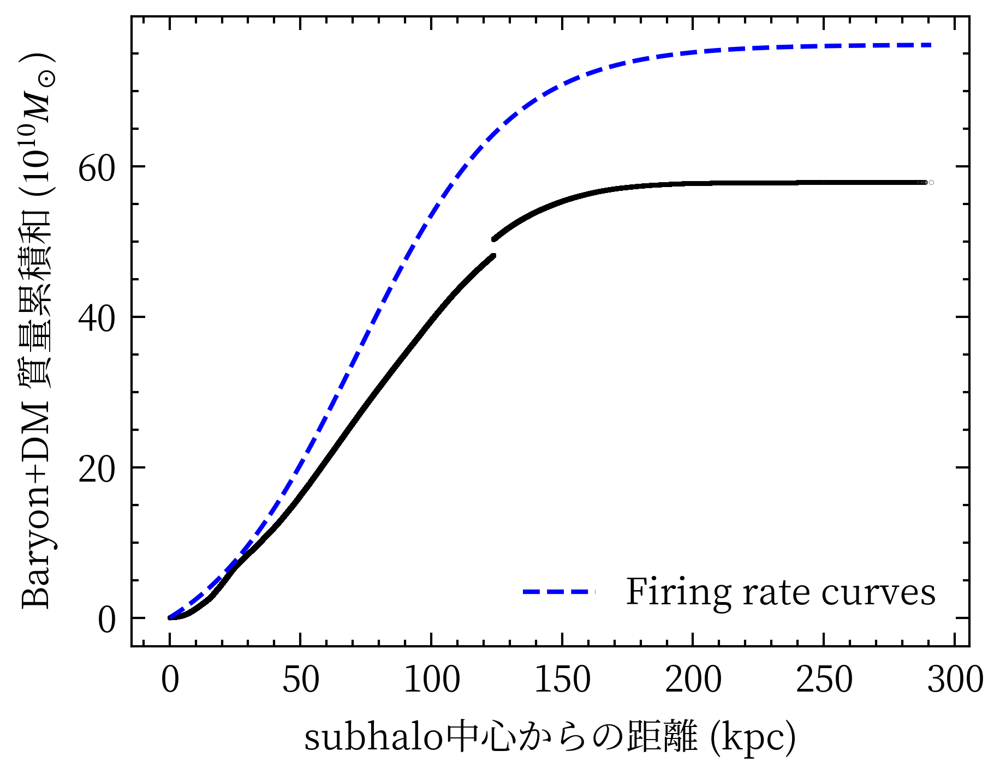
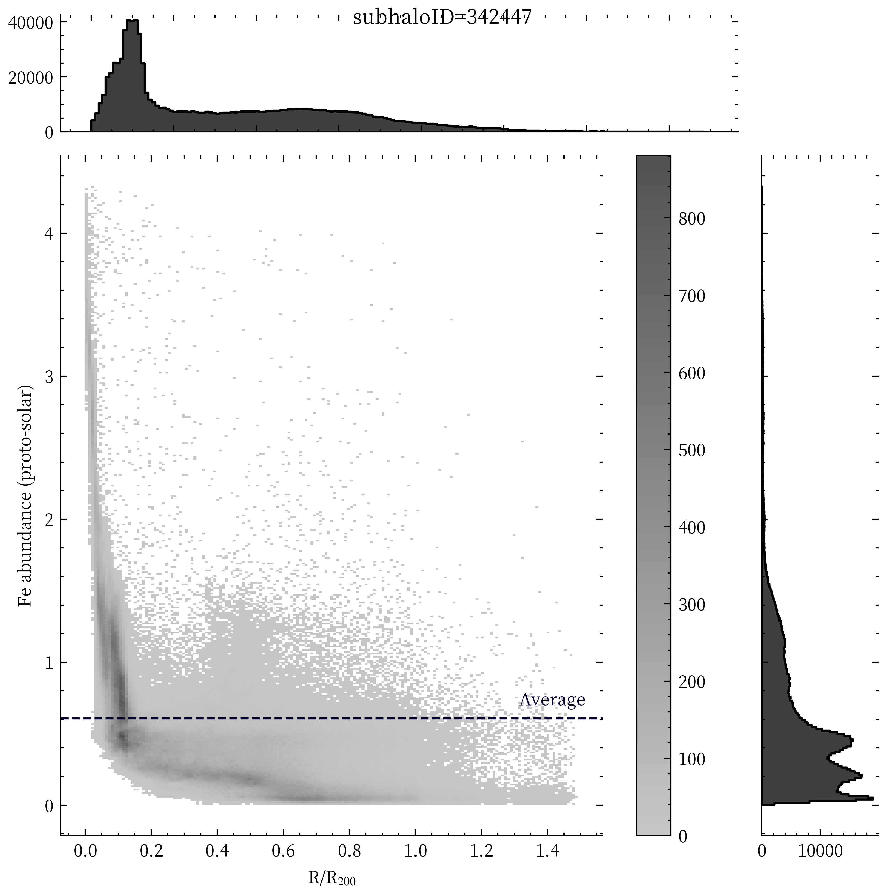

Plot test12
from TNG_catcher import *
import japanize_matplotlib
import scienceplots
plt.style.use(["science","ieee","no-latex","cjk-jp-font"])
The following modules installed.
- import illustris_python as il
- import numpy as np
- import pandas as pd
- import os
- import matplotlib.pyplot as plt
- from matplotlib.colors import LogNorm
- import glob
['x',
'y',
'z',
'Masses',
'SubfindDMDensity',
'SubfindDensity',
'SubfindHsml',
'Density']
/tmp/ipykernel_2168596/1779006499.py:1: RuntimeWarning: divide by zero encountered in divide
m_t = density_total * m / (density_total - density_DM)
basePath = "/home/nishihama/data/TNG50-1/output/"
snapnum = 99
with open("eROSITAbubble_subhaloID.txt", mode="r") as f:
subhalolist = [int(i) for i in f.readlines()]
dd = np.load(f"./AllCutData/subhalo{subhalolist[0]}_data.npz")
cm = il.groupcat.loadSingle(basePath, snapnum, subhaloID=subhalolist[0])["SubhaloCM"]
cmx, cmy, cmz = cm
plt.plot(r,m_t,".",ms=1,c="k")
plt.yscale("log")
plt.xscale("log")
plt.xlabel("銀河中心からの距離 (ckpc/h)")
plt.ylabel(r"Mass_total ($10^{10} M_\odot/h$)")
plt.show()

plt.plot(R,M,".",ms=1,c="k")
plt.yscale("log")
plt.xscale("log")
plt.xlabel("銀河中心からの距離 (ckpc/h)")
plt.ylabel(r"Mass_total ($10^{10} M_\odot/h$)")
plt.show()
# h = 73.45
mass_sun = 1.9891E+30
_r = 2.1 * (Cum_M * 10**10 /h / 10**15)**(1/3) * (h / 0.7)**(-2/3) * 10**3
plt.plot(R/h, Cum_M/h, ".", ms=1, c="k")
plt.xlabel("subhalo中心からの距離 (kpc)")
plt.ylabel("Baryon+DM 質量累積和 ($10^{10} M_\odot$)")
plt.show()

/tmp/ipykernel_2168596/1343395202.py:2: RuntimeWarning: overflow encountered in exp
return c*(1/(1 + np.exp(-a*(x-b))) - 1/(1 + np.exp(a*b)))
(False, False)
plt.plot(R/h, Cum_M/h, ".", ms=0.1)
plt.plot(R/h,y,label="Firing rate curves")
plt.xlabel("subhalo中心からの距離 (kpc)")
plt.ylabel("Baryon+DM 質量累積和 ($10^{10} M_\odot$)")
plt.legend()
plt.show()

array([3.02205862e-02, 7.23791626e+01, 6.73195722e+01])
array([4.87524726e-06, 4.47859571e-03, 5.85791076e-03])
array([0.01613221, 0.00618769, 0.00870165])
70335.21644036328
array([0.01564357, 0.01632727, 0.01823492, ..., 2.57636598, 2.57637643,
2.58304255])
977792
True
plt.plot(R/h, Cum_M/h, ".", ms=0.1)
plt.plot(R/h,y,label="$a(x-c)-b/a \log(1 + \exp(x-c)^b))$")
plt.xlabel("subhalo中心からの距離 (kpc)")
plt.ylabel("Baryon+DM 質量累積和 ($10^{10} M_\odot$)")
plt.legend()
plt.show()

array([0.38843146, 0.07411111, 4.12987471])
array([0.00350326, 0.00955158, 0.01600981])
328818.05079201405
array([ 0.9019004 , 12.88818763, 0.38765857])
X, Y = R/h, Cum_M/h
popt, pocv = curve_fit(neurology2, X, Y)
perr = np.sqrt(np.diag(pocv))
print(popt)
print(perr)
y = neurology2(R/h, *popt)
plt.plot(R/h, Cum_M/h, ".", ms=0.1)
plt.plot(R/h,y,label="Firing rate curves")
plt.xlabel("subhalo中心からの距離 (kpc)")
plt.ylabel("Baryon+DM 質量累積和 ($10^{10} M_\odot$)")
plt.legend()
plt.show()
[3.40099141e-02 7.12600777e+01]
[2.49081036e-06 4.99997378e-03]
72502.48928912234
977793
True
y = neurology2(R/h, *popt) * 76.12/57.86
plt.plot(R/h, Cum_M/h, ".", ms=0.1)
plt.plot(R/h,y,label="Firing rate curves",c="b")
plt.xlabel("subhalo中心からの距離 (kpc)")
plt.ylabel("Baryon+DM 質量累積和 ($10^{10} M_\odot$)")
plt.legend()
plt.show()

194.94807873608775
ddd = np.load(f"AllCutData/subhalo{subhalolist[0]}_data.npz")
test2 = plot_tools(ddd)
x, y, z, fe, H = test2.output("Fe", "H")
fe = np.delete(fe, NA_Data, 0)
H = np.delete(H, NA_Data, 0)
abd = pd.read_csv("./solar_xspec_qiita.csv")
fe_abd = ((fe / abd["atomicMass"][25]) / (H / abd["atomicMass"][0])) / (
abd["aspl"][25] / abd["aspl"][0]
)
X = R/h / viri
Y = fe_abd
average = np.mean(Y)
df = pd.DataFrame({"Fe abundance (proto-solar)": Y, "R/R$_{200}$": X})
g = sns.JointGrid(
data=df,
y="Fe abundance (proto-solar)",
x="R/R$_{200}$",
marginal_ticks=True,
)
g.plot_joint(sns.histplot, discrete=(False, False), cbar=True)
g.ax_joint.axhline(y=average, color="#03012d", linestyle="--", lw=1)
g.ax_joint.text(np.max(X) * 0.88, average * 1.15, "Average", color="#03012d")
g.plot_marginals(sns.histplot, element="step")
g.fig.suptitle(f"subhaloID={subhalolist[0]}")
Text(0.5, 0.98, 'subhaloID=342447')
